A Short History of The Studio That Brought Anime to Saturday Morning Television
What was 4Kids?
New York based company
Started in 1970 as a merchandising and licensing company
Licensed, dubbed, edited and broadcasted Japanese and other international animation for American kids.
Aired Saturday mornings on Fox (and later the CW)
Active from the early '90s until they collapsed in 2012
Their core: international animation is cheap to license and expensive to merchandise. Targeted shows that had merchandise potential — toys, plushies, trading cards, etc.
The 4Kids Roster
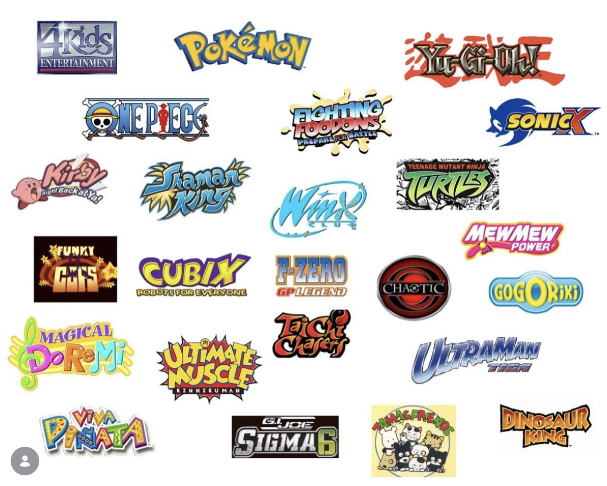
1998: The Pokémon Coup
Pokémon series was a hard sell stateside. Nintendo of America was nervous about how Japanese it felt, no major US network jumped at it.
4Kids licensed the anime, music, merchandise, and broadcast rights into one deal
Premiered in syndication, September 1998. Within months: cards, toys, movies, cereal
Syndication = sold to individual local stations, not a national network. Lower-prestige but let 4Kids schedule flexibly and run their own toy ads in the breaks.
Topps Pokemon Cards
Topps reached out to 4Kids and licensed Pokemon from them. These could not compete with the original (TCG) cards, so there were no battle stats. Some of the cards were just screengrabs from the show
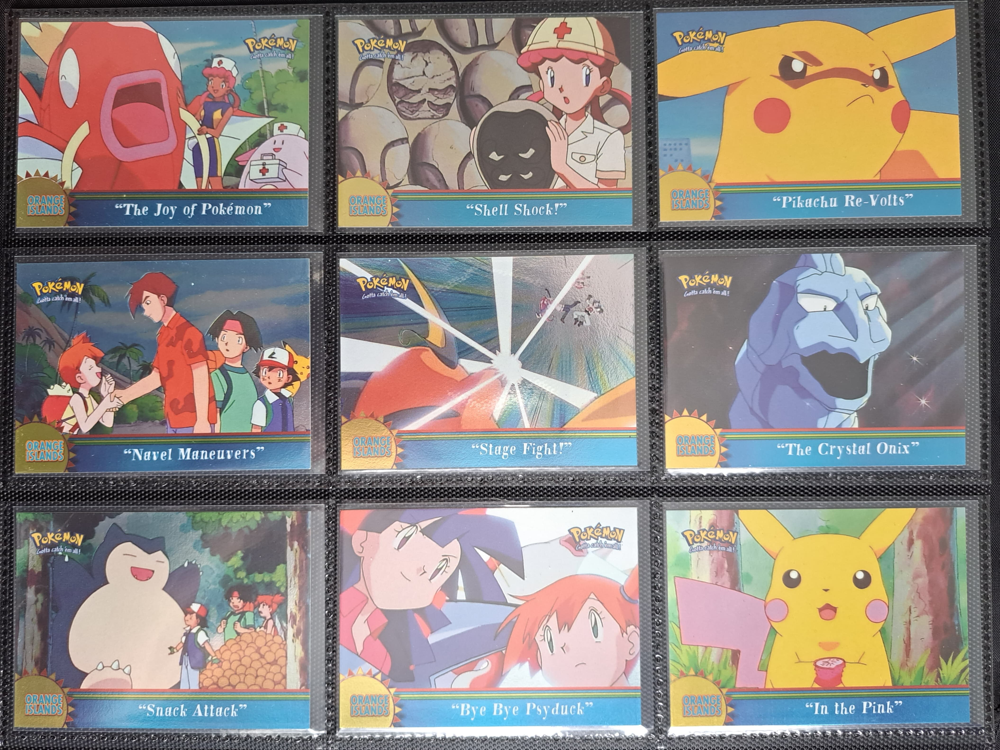
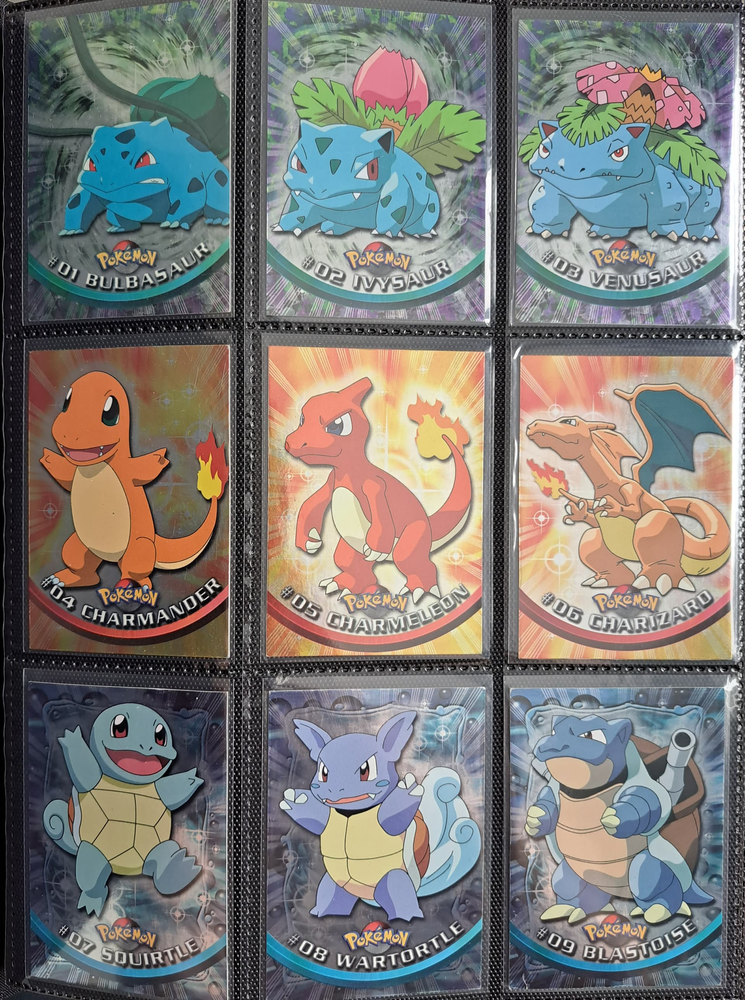
2001: Yu-Gi-Oh!
Licensed the Yu-Gi-Oh! anime in 2001 (the "Duel Monsters" series)
Less of a cultural moment than Pokémon, but the Trading Card Game was enormous
4Kids was making money in both trading card empires at once
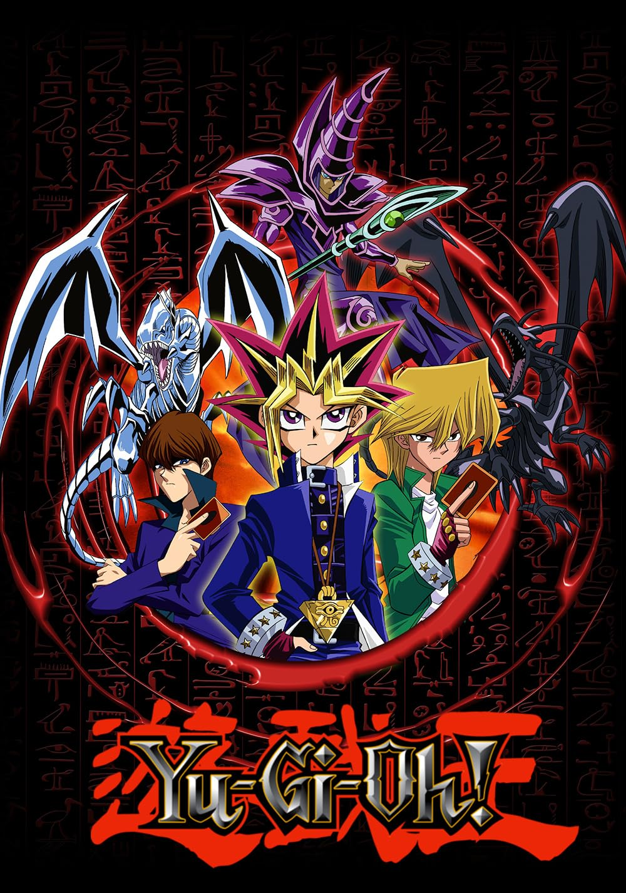
Winx Club
Italian production, made by Rainbow S.r.l.
4Kids brought it to the US in 2004
Canadian English dub existed that was closer to the original Italian, 4kids created the "American" dub.
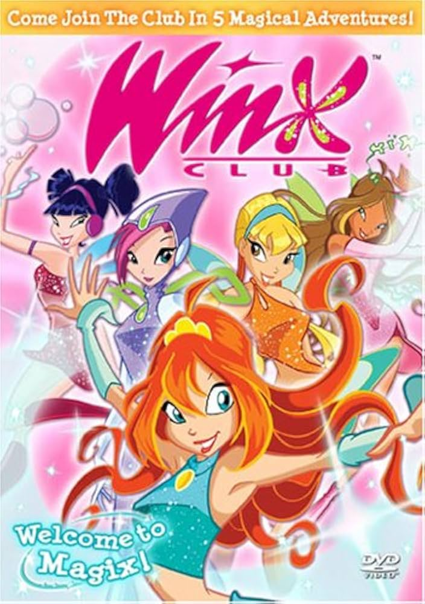
The Winx Dolls
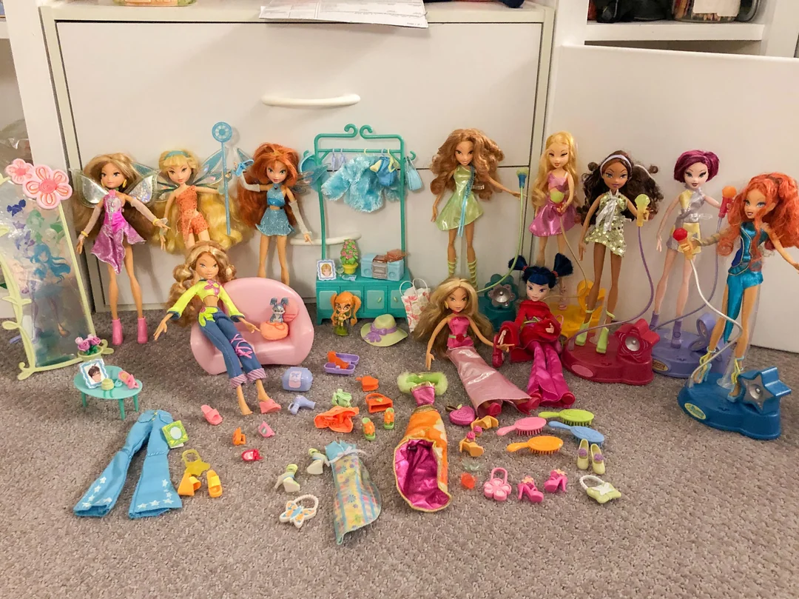
The Localization Philosophy
4Kids didn't just translate shows, they Americanized them
Audience: American kids, broadcast TV, ages 6–12
Constraints: FCC standards, Saturday-morning ad sensibilities, syndication-friendly runtimes
Result: Censorship of anything not kid-friendly, but also some odd changes due to cultural differences.
Translation: "What does this Japanese line mean?" Localization: "What would an American kid say in this scene?" 4Kids: "What if there were never any Japanese kids in this scene at all?"
Paul Taylor — head Japanese-to-English translator at 4Kids. Served an LDS mission in Japan, then went on to write the English scripts for, among other things, Pokémon.
Exhibit A: Jelly Donuts
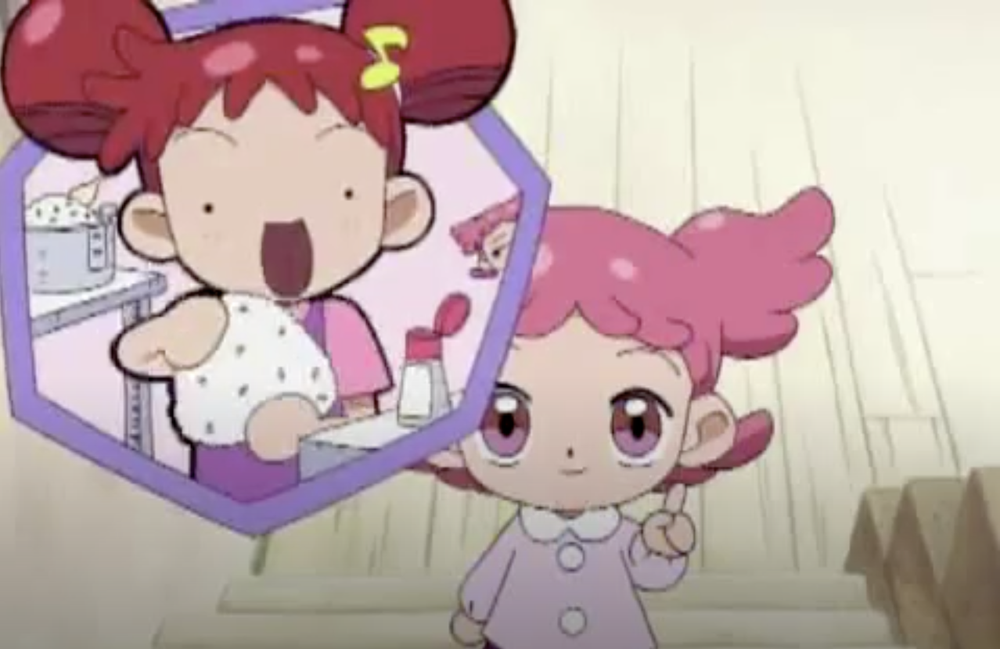
Magical DoReMi"She stayed up all night making coconut puffs!"
Pokémon"These donuts are great! Jelly-filled are my favorite!"
Exhibit B: One Piece
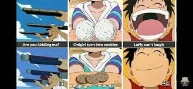
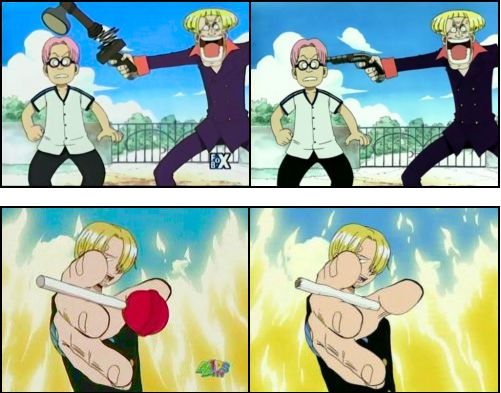
Exhibit C: The One 4Kids Got Right
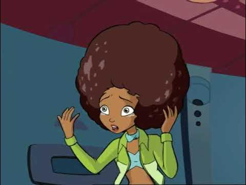
In Their Defense…
All of those changes gave 4Kids a complicated reputation.
"4Kids dub" became a pejorative in anime circles
Purists call the localizations butchered, prefer the subs or any other dub
The backlash was sharpest for Winx Club and One Piece
It got so bad that One Piece fans made accounts on the Winx Club Online Forums just to vent
My take:That's a little harsh. 4Kids did they best they could in the constraints they were given and culture of the time.
For the kids who grew up on it, those dubs are the show.
The music.
Even if the dubs are controversial, the music is where 4Kids is undefeated.
4Kids replaced Japanese openings with original English themes — written specifically for the US audience
The in-house music team included John Siegler, Russell Velazquez, and John Loeffler
People still credit 4kids for having the most iconic theme songs for multiple shows.
Yu-Gi-Oh! Theme
"It's time to D-D-D-D-Ddddddduel"
Performed by Wayne Sharpe (composer) with vocals credited to Russell Velazquez
Winx Club Theme
"We are the Winx"
Ironically a close second favorite of the community because everyone agrees the German version slaps
This is my childhood.
One Piece Theme
The Pirate Rap - "Don't give it up Luffy!"
Very mixed feelings on this one, some hate it, some say "it's f***ing glorious."
Pokémon Theme
"I wanna be the very best like no one ever was..."
Written by John Siegler and John Loeffler
Performed by Jason Paige
Released 1999 on the 2.B.A. Master album
The Fall
2006: 4Kids loses the Pokémon contract. The Pokémon Company International takes the franchise back in-house.
2011: Lawsuit with TV Tokyo and ADK over Yu-Gi-Oh! royalties. 4Kids accused of underreporting income.
April 2011: Files for Chapter 11 bankruptcy.
2012: Yu-Gi-Oh! rights sold off. The company is effectively done.
The Legacy
Introduced anime to American kids.
Created a whole generation of kids toys
The "4Kids version" became a specific aesthetic and a specific era
Modern Pokémon, Yu-Gi-Oh!, and Winx Club all still build on what 4Kids established
My 4kids History
~2007: 6AM alarm set Saturday mornings for Magical Doremi and Winx Club
~2009: On the website every day, watching episodes & playing PC games from the shows
~2010: Winx Club dub deep dive - 4kids>Canadian>Nickelodeon
4kids is the only version I consider canon due to the lore.
2021: Yu-Gi-Oh honeymoon - I realize Davo also grew up on 4kids
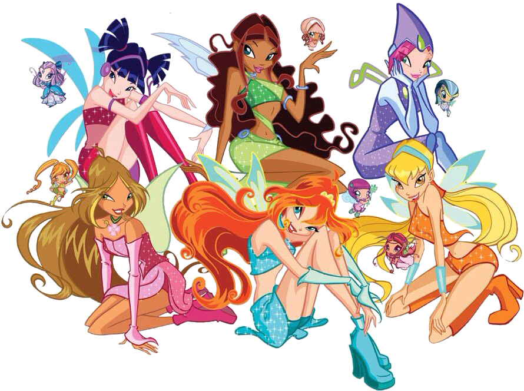
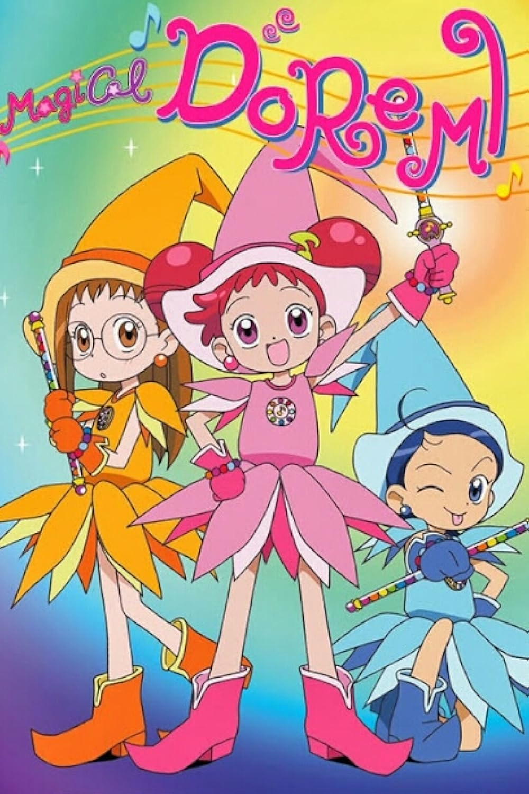
Credit Where Credit is Due
4Kids was a vibe.
Winx Club Forever Podcast - specifically for American "Winxers"
4kids Flash Back Podcast - interviews with former voice actors and employees